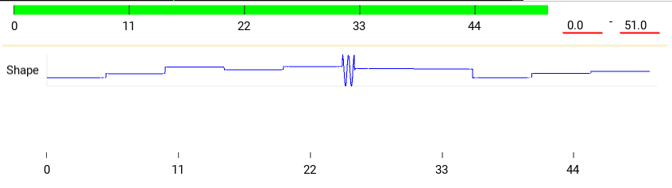

Ceed functions
A Ceed function is how a stage attaches a time-varying intensity to its shapes.
The stage calls the function or sequence of functions for every video frame with the current global time and the function returns a scalar value between 0-1, inclusive. This intensity is used for that stage’s shapes for that frame.
See the function API for in-depth function details.
Creating functions
Ceed comes with pre-defined functions, but a plugin can add to the available functions. Additionally, you can customize functions in the function pane to make it available for re-use in other function groups or stages.
This video shows multiple ways to create a customized global cosine function from existing cosine functions.
Customizing functions
Each function has parameters that describe its output as a function of time. All functions have these basic parameters:
Duration (
duration) - the time domain where it’s valid.. See also Function timebase.Loop (
loop) - the number of times to loop. The function restarts as many times over its domain until done.TB num/denom (
timebase) see Function timebase.Offset (
t_offset) - an offset to the time parameter. E.g. if the function isy = m * t + b, specifying a non-zero value for offset will computey = m * (t + t_offset) + b.
Function groups
Functions groups enable iterating through a sequence of functions as if it was a single function whose duration is the sum of its children functions, recursively.
Initially, when adding or dragging a global function into a group, only a reference to the function is added. So changing the original function will change the reference function as well, and the original function cannot be deleted. A reference function is indicated with the T-junction icon in the video. Clicking it will break the reference and convert it to a independent function.
Ceed guards from adding a group function to itself or its children, to prevent infinite recursion as shown at the end of video.
Randomizing functions
Function parameters can be randomized so it is resampled before each experiment. As seen in the video, there are multiple distributions to choose from and more can be added by plugins.
Looping
When a function or stage is looped, randomized parameters can be resampled once and the value used for all loop iterations, or it can be resampled once for each loop iteration.
In Ceed, the “Resample each loop”
(sample_each_loop) option controls
this behavior. For example, this protocol contains a function of constant intensity
of 5 sec duration. Additionally, the function loops twice and the stage loops 3 times
for a total of 6 loops. The intensity parameter is randomized from a Gaussian and
is not resampled for each loop. So its graph is constant.
This protocol however does resample each loop iteration, which is reflected in its graph.
Lock after forking
Before an experiment, functions with random parameters are re-sampled and then copied; that’s so the original prototype functions are not directly used by an experiment. After the copy, Ceed again re-samples the functions because of the following.
As shown above, Ceed supports reference functions that can
be re-used in multiple places, allowing them to share parameters. These references
are individually cloned from the prototype at the copying step into unique functions.
The randomized parameters of the cloned functions support two options with regards to
re-sampling, controlled by “Lock after fork”
(lock_after_forked).
If False, Ceed will resample the parameter again after cloning. This ensures that each cloned copy will not share the same random values as the original and sibling functions. If True, the cloned functions will not be re-sampled so they will share the original re-sampled parameters.
The following protocol contains 3 functions; a reference to a constant function that loops 5 times and its intensity is randomized, it’s followed by a short cosine, that is followed again by a reference to the same constant function.
Here we set “Lock after fork” to False. You can see how both references to the constant function have different values.
Here we set “Lock after fork” to True. You can see how both reference functions repeat the same pattern because they share the same random values for each loop iteration.
Function timebase
Functions are sampled by the stage at integer multiples of the video frame rate period.
As function duration approaches the period,
specifying duration using time in decimal
leads to inaccuracy and rounding. Functions therefore support specifying duration as
integer multiple of video frames. E.g. it can be set to be exactly one frame long.
When the function timebase is specified and non-zero, the duration
is multiplied by the timebase to get the duration
in seconds. So when the timebase is exactly one over the frame rate - the period,
a duration of one means one frame.
E.g. in the video, the frame rate is 59.94, or 2997 / 50. Setting the timebase fraction
to 50 / 2997 will allow use to set the duration of each constant function in the group
to one frame. Then, setting the intensity (a) of the first child function to zero,
the second one to one, and the group to loop over them 500 times will create a
function that alternates between zero and one intensity for each frame.
The stages and preview graph are explained in the stage guide.
Children of function groups (recursively) inherit their timebase from their parents, if it’s not explicitly overwritten by the child.
Create function in script
Functions and stages/shapes can be created in a script,
saved to a yaml file, and then imported from the GUI ready to be
used in an experiment. See the CeedDataWriterBase.save_config_to_yaml
method for an example.
Function plugin
Ceed comes with a few functions, however using plugins Ceed can support any custom function.
It is fully explained in Function plugins, but you can make your plugin available to
Ceed by copying your Python file to the ceed/function/plugin directory
under where Ceed is installed, or register your external plugin package
using external_function_plugin_package.
Ceed gets your function classes using a get_ceed_functions function in the
plugin and similarly it uses get_ceed_distributions to get the probability
distribution classes.
To write a plugin, it helps to become familiar with the
function API and the FuncBase
class that all functions inherit from.
A very simple function plugin file that computes 1 / (max(t, 1) ^ 2),
where t is the elapsed time is:
from kivy.properties import NumericProperty
from ceed.function import CeedFunc
class DecayFunc(CeedFunc):
# The parameter must be a Kivy property, so the GUI can update from it
c = NumericProperty(1.)
def __init__(self, **kwargs):
self.name = 'Decay'
self.description = 'y(t) = m / (t + t_offset) ^ 2'
super().__init__(**kwargs)
def __call__(self, t):
# super handles checking whether function is finished
super().__call__(t)
t = self.get_relative_time(t)
return self.c / max(t, 1) ** 2
def get_gui_props(self):
# makes sure c is editable from the GUI
d = super().get_gui_props()
d['c'] = None
return d
def get_state(self, *largs, **kwargs):
# makes sure c is included in config
d = super().get_state(*largs, **kwargs)
d['c'] = self.c
return d
def get_noise_supported_parameters(self):
# enables c to be randomized
val = super().get_noise_supported_parameters()
val.add('c')
return val
def get_ceed_functions(function_factory):
return [DecayFunc]
Simply copy the above code into your python file and place it in your external
package or in Ceed’s plugin directory, e.g. ceed/function/plugin/my_plugin.py
and DecayFunc will be listed in the GUI.
Similarly, you can add a simple random distribution that returns one of two numbers and make it available to randomize parameters, by copying the following code into your function plugin file:
from random import random
from kivy.properties import NumericProperty
from ceed.function.param_noise import NoiseBase
class BinaryNoise(NoiseBase):
# The parameters must be a Kivy property, so the GUI can update from it
# The type of the default value (0.0 - float here) is the type the user
# can enter in the GUI. E.g. if it was an int, only ints could be entered
a = NumericProperty(0.)
b = NumericProperty(0.)
def sample(self):
return self.a if random() < .5 else self.b
def get_config(self):
# makes sure c is included in config and editable from the GUI
config = super().get_config()
for attr in ('a', 'b'):
config[attr] = getattr(self, attr)
return config
def get_prop_pretty_name(self):
# the user friendly name to display in the GUI
names = super().get_prop_pretty_name()
names['a'] = 'First value'
names['b'] = 'Second value'
return names
def get_ceed_distributions(function_factory):
return [BinaryNoise]